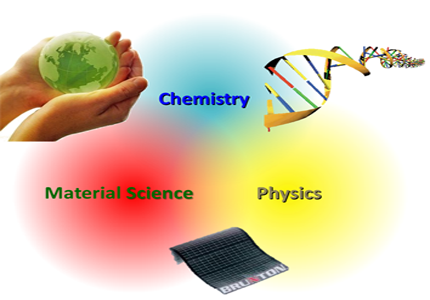

Welcome
Nanoscience bridges the macroscopic world and the atomic/molecular world and provides the ultimate control of materials' electrical and mechanical properties. So what exactly we can do with it? Currently, we are interested in the development of new functional nanomaterial for renewable energy application and new class of nanodevice system for analytical/diagnostic applications.

Our projects are highly interdisciplinary and involving Chemistry, Material Science and Microfabrication. We are particularly interested in applying nanotechnology to practical applications by deeply understand the underlying fundamental science. Students of backgrounds in physics, chemistry, and/or materials science are welcome to join the group.
Contact

Dr. Jinyao Tang Assistant Professor
Department of Chemistry The University of Hong Kong Pokfulam Road Hong Kong Phone: (+852) 2299 0369
Email: